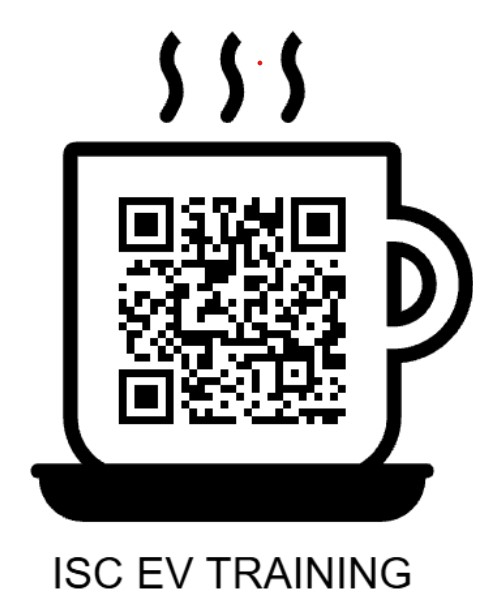

Pilih Modul Pembelajaran
Silakan pilih salah satu modul interaktif di bawah ini, atau scan QR code di samping untuk langsung membagikan halaman utama ini ke perangkat peserta.

Scan untuk Buka di HP
Akses cepat materi pelatihan
Dasar Elektronika
Halaman web interaktif ini adalah media belajar dasar elektronika yang mencakup materi rangkaian tertutup, penggunaan multimeter, resistor, LED, pembagi tegangan, hingga kapasitor melalui simulasi digital.
Baterai Kendaraan R2
Halaman web interaktif ini adalah media belajar mendalam mengenai komponen baterai motor listrik roda dua (R2), mulai dari pemahaman besaran dasar, karakteristik jenis kimia sel, konfigurasi seri-paralel, simulasi sistem proteksi BMS, hingga penjelasan berbagai salah kaprah seputar baterai lithium.
Motor BLDC & Hub Motor R2
Halaman web interaktif ini adalah media belajar mendalam mengenai prinsip kerja motor listrik jenis Brushless DC (BLDC) dan motor hub roda dua (R2), mulai dari konsep dasar elektromagnetisme, domain magnetik, gaya, torsi, back-EMF, animasi komutasi kumparan dan sensor Hall, kurva karakteristik kinerja, hingga pemahaman mendalam seputar peranan kontroler dan berbagai salah kaprah populer di masyarakat.
Smart Kit Simulator
Simulasi kendaraan roda dua dengan Smart Kit Simulator untuk menguji pemahaman sistem penggerak dan kontrol secara menyeluruh.